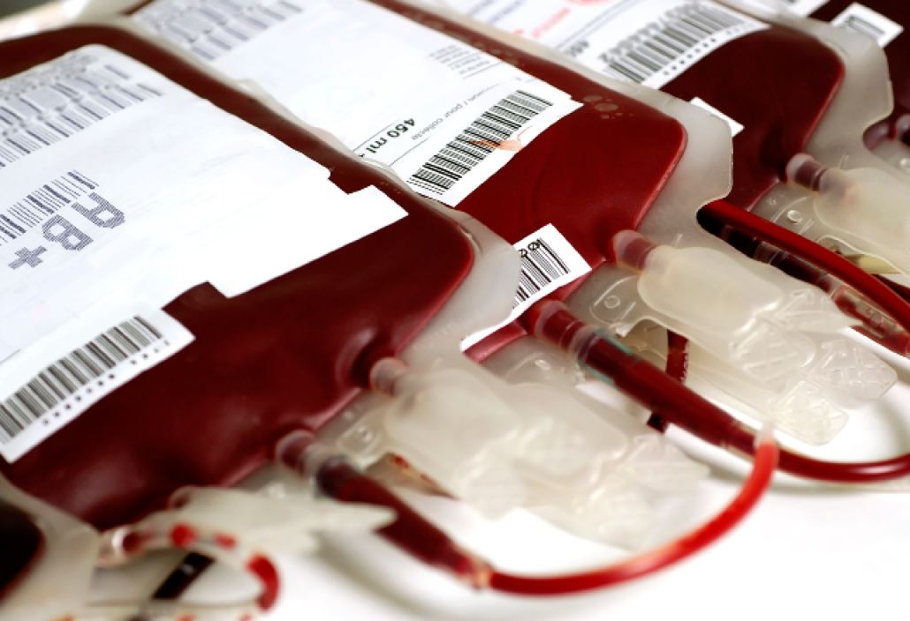

One Type to Rule Them All
A universal blood machine
Adnan Haque
Fall 2008

In the near future, blood type incompatibility may no longer be a
problem. ZymeQuest®, a biotechnology company in Beverly, Massachusetts,
is developing a universal blood machine that may one day convert all
blood types into the universally accepted O-type.
Human blood is categorized into four types: A-type,
B-type, AB-type, and O-type. Robert Beatty, PhD, assistant adjunct
professor of Molecular and Cell Biology, University of California,
Berkeley, explains that these four classes of blood are dependent on
the presence of ABO sugars on red blood cells: A-type cells have A
sugars, B-type cells have B sugars, AB-type cells have both A and B,
and O-type cells have neither. These different configurations of sugar
types create distinguishing antigenic determinants. While the
differences between the varieties are small, the presence of terminal
sugar chains on the red blood cells has a significant effect on the
safety of blood transfusions.
Antibodies in the body, made from blood-identifying
proteins, will immediately attack any blood cell containing sugars the
host body does not originally have. This means that an A-type person’s
immune system will attack any B-type blood cells, and vice versa,
potentially causing fatalities. Since O-type blood cells do not have
any antigenic sugars attached to their membranes, the antibodies have
nothing to attack. The aim of the universal blood machine, then, is to
change all blood types into O-type, the universal donor.
This device could have major benefits for blood
banks and hospitals by reducing the need for stocking different kinds
of blood and eliminating the dependency on O-type donors. According to
the Red Cross, the leading blood donation center in the United States,
14 million blood transfusions occurred in 2001 alone, with about one in
every ten hospital patients requiring blood. Approximately 38,000
donations are needed every day, particularly from those who have O-type
blood, who represent only 38 percent of the US population.
Additionally, according to ZymeQuest®, the shelf life of donated whole
blood is 42 days, which forces hospitals to dispose of four to six
percent of donated blood every year. George Garratty, PhD, the
scientific director at the Los Angeles Red Cross, adds that the Red
Cross “is always short of Group O blood type because [it] can be given
to all other blood types.”
ZymeQuest®’s machine could solve many of these
problems by allowing for A, B, and AB carriers to donate more
frequently to a wider range of patients. Furthermore, C. Evan
Ballantyne, vice president and chief financial officer of ZymeQuest®,
believes this invention will save American hospitals around $800
million a year – money that can be used to facilitate acquisition and
distribution of more blood, and to ultimately make a greater impact on
the nationwide blood shortage.